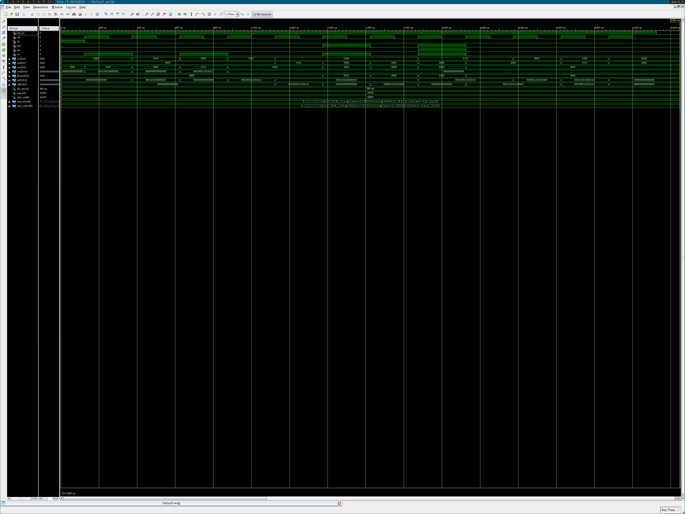
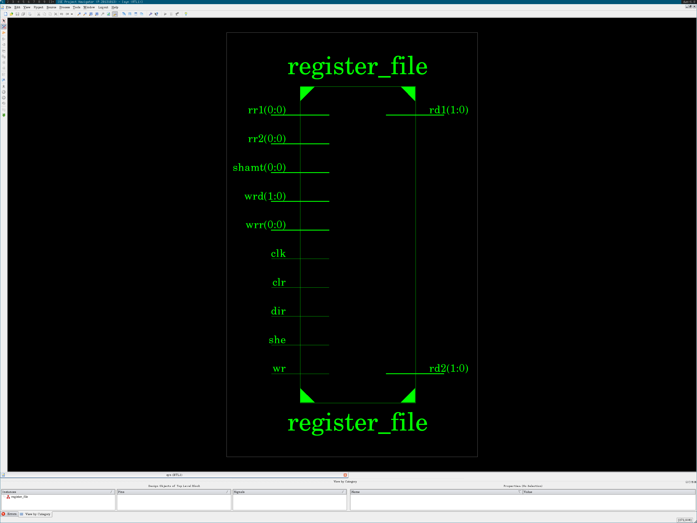
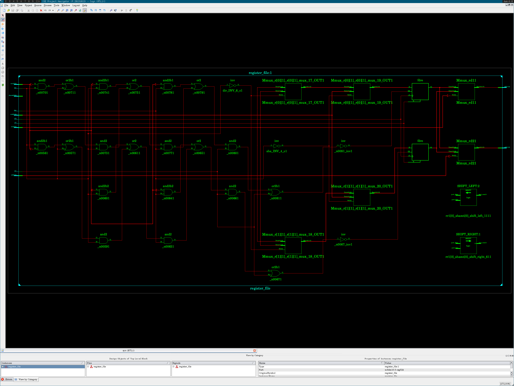

Arch register-file-arch.vhdl
back to nav
library ieee;
use ieee.std_logic_1164.all;
use ieee.numeric_std.all;
library work;
use work.conv.int2str;
use work.conv.uint;
use work.conv.int;
use work.math.log;
entity register_file is
generic (
debug: boolean := false;
reg_size: positive := 2;
data_width: positive := 2
);
port (
clk: in std_logic;
clr: in std_logic;
she: in std_logic;
dir: in std_logic;
wr: in std_logic;
rr1: in std_logic_vector(log(reg_size, 2)-1 downto 0);
rr2: in std_logic_vector(log(reg_size, 2)-1 downto 0);
wrr: in std_logic_vector(log(reg_size, 2)-1 downto 0);
wrd: in std_logic_vector(data_width-1 downto 0);
shamt: in std_logic_vector(log(data_width, 2)-1 downto 0);
rd1: out std_logic_vector(data_width-1 downto 0);
rd2: out std_logic_vector(data_width-1 downto 0)
);
end register_file;
architecture register_file_arch of register_file is
type arr is array (0 to reg_size-1) of
std_logic_vector(data_width-1 downto 0);
signal r: arr := (others => (others => '0'));
attribute ram_style: string;
attribute ram_style of r: signal is "distributed";
alias slv is to_stdlogicvector [bit_vector return std_logic_vector];
alias bv is to_bitvector [std_logic_vector, bit return bit_vector];
begin
rd1 <= r(uint(rr1));
rd2 <= r(uint(rr2));
process(clk, clr)
begin
if (rising_edge(clk)) then
-- reset
if (clr = '1') then
if debug then
report "reg = NULL";
end if;
for i in 0 to reg_size-1 loop
r(i) <= (others => '0');
end loop;
-- read (always)
elsif (wr = '0') then
-- empty --
-- write
elsif (she = '0') then
if debug then
report "write " &
"reg[" & int2str(uint(wrr)) & "] = " &
int2str(int(wrd)) &
"";
end if;
r(uint(wrr)) <= wrd;
-- shift right
elsif (dir = '0') then
if debug then
report "shift " &
"reg[" & int2str(uint(wrr)) & "] = " &
"reg[" & int2str(uint(rr1)) & "] >> " &
int2str(uint(shamt)) &
"";
end if;
r(uint(wrr)) <=
slv(bv(r(uint(rr1))) srl uint(shamt));
-- shift left
elsif (dir = '1') then
if debug then
report "shift " &
"reg[" & int2str(uint(wrr)) & "] = " &
"reg[" & int2str(uint(rr1)) & "] << " &
int2str(uint(shamt)) &
"";
end if;
r(uint(wrr)) <=
slv(bv(r(uint(rr1))) sll uint(shamt));
end if;
if debug then
report "read " &
"reg[" & int2str(uint(rr1)) & "] = " &
int2str(uint(r(uint(rr1)))) & ", " &
"reg[" & int2str(uint(rr2)) & "] = " &
int2str(uint(r(uint(rr2)))) &
"";
end if;
end if;
end process;
end register_file_arch;
back to nav
Test register-file-test.vhdl
back to nav
library std;
use std.textio.all;
library ieee;
use ieee.std_logic_1164.all;
use ieee.numeric_std.all;
library work;
use work.math.log;
use work.ctype.num_base;
use work.conv.str2int;
use work.conv.int2str;
use work.conv.ustdlv;
use work.conv.uint;
entity register_file_test is
generic (
test_in: string := "register-file-test-in.txt";
test_out: string := "register-file-test-out.txt"
);
end register_file_test;
architecture register_file_test_arch of register_file_test is
constant clk_period: time := 250 ns;
signal clk_en: std_logic := '1';
signal clk: std_logic;
constant reg_size: positive := 16;
constant data_width: positive := 16;
signal clr: std_logic;
signal she: std_logic;
signal dir: std_logic;
signal wr: std_logic;
signal rr1: std_logic_vector(log(reg_size, 2)-1 downto 0);
signal rr2: std_logic_vector(log(reg_size, 2)-1 downto 0);
signal wrr: std_logic_vector(log(reg_size, 2)-1 downto 0);
signal wrd: std_logic_vector(data_width-1 downto 0);
signal shamt: std_logic_vector(log(data_width, 2)-1 downto 0);
signal rd1: std_logic_vector(data_width-1 downto 0);
signal rd2: std_logic_vector(data_width-1 downto 0);
begin
clk0: entity work.clock_pulse
generic map (period => clk_period)
port map (enable => clk_en, clock => clk);
register_file0: entity work.register_file
generic map (
debug => true,
reg_size => reg_size,
data_width => data_width
)
port map (
clk => clk,
clr => clr,
she => she,
dir => dir,
wr => wr,
rr1 => rr1,
rr2 => rr2,
wrr => wrr,
wrd => wrd,
shamt => shamt,
rd1 => rd1,
rd2 => rd2
);
process
file f0: text open read_mode is test_in;
file f1: text open write_mode is test_out;
variable l0, l1: line;
variable ln: positive := 1;
variable i: positive;
variable n: integer;
variable parsed: boolean;
begin
if endfile(f0) then
clk_en <= '0';
wait;
end if;
parsed := false;
readline(f0, l0);
if l0'length /= 0 and l0(l0'low) /= '#' then
i := 1;
-- clr
str2int(l0.all(i to l0.all'right), i, n);
clr <= ustdlv(n, 1)(0);
-- she
str2int(l0.all(i to l0.all'right), i, n);
she <= ustdlv(n, 1)(0);
-- dir
str2int(l0.all(i to l0.all'right), i, n);
dir <= ustdlv(n, 1)(0);
-- wr
str2int(l0.all(i to l0.all'right), i, n);
wr <= ustdlv(n, 1)(0);
-- rr1
str2int(l0.all(i to l0.all'right), i, n);
rr1 <= ustdlv(n, rr1'length);
-- rr2
str2int(l0.all(i to l0.all'right), i, n);
rr2 <= ustdlv(n, rr2'length);
-- wrr
str2int(l0.all(i to l0.all'right), i, n);
wrr <= ustdlv(n, wrr'length);
-- wrd
str2int(l0.all(i to l0.all'right), i, n);
wrd <= ustdlv(n, wrd'length);
-- shamt
str2int(l0.all(i to l0.all'right), i, n);
shamt <= ustdlv(n, shamt'length);
parsed := true;
wait until rising_edge(clk);
else
writeline(f1, l0);
end if;
if parsed then
write(l1, int2str( uint(clr), dec), right,10);
write(l1, int2str( uint(she), dec), right, 4);
write(l1, int2str( uint(dir), dec), right, 4);
write(l1, int2str( uint(wr), dec), right, 4);
write(l1, int2str( uint(rr1), dec), right, 5);
write(l1, int2str( uint(rr2), dec), right, 5);
write(l1, int2str( uint(wrr), dec), right, 5);
write(l1, int2str( uint(wrd), dec), right, 6);
write(l1, int2str(uint(shamt), dec), right, 7);
write(l1, int2str( uint(rd1), dec), right, 9);
write(l1, int2str( uint(rd2), dec), right, 6);
writeline(f1, l1);
end if;
ln := ln + 1;
end process;
end register_file_test_arch;
back to nav
Test input register-file-test-in.txt
back to nav
# Format input:
# clr she dir wr rr1 rr2 wrr wrd shamt | rdd1 rdd2
# 0/1 0/1 0/1 0/1 2 4 0 0 0 512 512
#
#
# Clear
#
1 0 0 0 0 0 0 0 0
#
# [4] <- 6789
#
0 0 0 1 0 0 4 6789 0
0 0 0 0 4 0 0 0 0
#
# [7] <- 4567
#
0 0 0 1 0 0 7 4567 0
0 0 0 0 7 0 0 0 0
#
# Read [4] [7]
#
0 0 0 0 4 7 0 0 0
#
# [1] <- [4] >> 3
#
0 1 0 1 4 0 1 0 3
0 0 0 0 4 1 0 0 0
#
# [2] <- [7] << 4
#
0 1 1 1 7 0 2 0 4
0 0 0 0 7 2 0 0 0
#
# Read [1] [2], Read [4] [7]
#
0 0 0 0 1 2 0 0 0
0 0 0 0 4 7 0 0 0
# wait for last
0 0 0 0 0 0 0 0 0
back to nav
Test output register-file-test-out.txt
back to nav
# Format input:
# clr she dir wr rr1 rr2 wrr wrd shamt | rdd1 rdd2
# 0/1 0/1 0/1 0/1 2 4 0 0 0 512 512
#
#
# Clear
#
1 0 0 0 0 0 0 0 0 0 0
#
# [4] <- 6789
#
0 0 0 1 0 0 4 6789 0 0 0
0 0 0 0 4 0 0 0 0 6789 0
#
# [7] <- 4567
#
0 0 0 1 0 0 7 4567 0 0 0
0 0 0 0 7 0 0 0 0 4567 0
#
# Read [4] [7]
#
0 0 0 0 4 7 0 0 0 6789 4567
#
# [1] <- [4] >> 3
#
0 1 0 1 4 0 1 0 3 6789 0
0 0 0 0 4 1 0 0 0 6789 848
#
# [2] <- [7] << 4
#
0 1 1 1 7 0 2 0 4 4567 0
0 0 0 0 7 2 0 0 0 4567 7536
#
# Read [1] [2], Read [4] [7]
#
0 0 0 0 1 2 0 0 0 848 7536
0 0 0 0 4 7 0 0 0 6789 4567
# wait for last
0 0 0 0 0 0 0 0 0 0 0
back to nav
Test waveform register-file-test.png
back to nav

back to nav
Schematic pinout register-file-nexys3-pinout.png
back to nav

back to nav
Schematic full register-file-nexys3-schema.png
back to nav

back to nav
Pin placement (UCF) register-file-nexys3.ucf
back to nav
net "clk" loc = "V10";
net "clr" loc="T5";
net "she" loc="V8";
net "dir" loc="U8";
net "wr" loc="N8";
net "rr1[0]" loc="M8";
net "rr2[0]" loc="V9";
net "wrr[0]" loc="T9";
net "wrd[0]" loc="T10";
net "rd1[1]" loc="T11";
net "rd1[0]" loc="R11";
net "rd2[1]" loc="N11";
net "rd2[0]" loc="M11";
net "wrd[1]" loc="A8";
back to nav
Source code of util-arch.vhdl
back to nav
--------------------------
-- Clock for testbenchs --
--------------------------
library ieee;
use ieee.std_logic_1164.all;
entity clock_pulse is
generic (period: time);
port (enable: in std_logic; clock: out std_logic);
end clock_pulse;
architecture clock_pulse_arch of clock_pulse is
signal clk: std_logic := '0';
begin
clk <=
not clk after period/2 when enable = '1' else
'0' when enable = '0';
clock <= clk;
end clock_pulse_arch;
--------------------------
-- A 2to1 mux ------------
--------------------------
library ieee;
use ieee.std_logic_1164.all;
entity mux2to1 is
generic (size: positive);
port (
a: in std_logic_vector(size-1 downto 0);
b: in std_logic_vector(size-1 downto 0);
s: in std_logic;
z: out std_logic_vector(size-1 downto 0)
);
end mux2to1;
architecture mux2to1_arch of mux2to1 is
begin
process (s, a, b)
begin
case s is
when '0' => z <= a;
when others => z <= b;
end case;
end process;
end mux2to1_arch;
--------------------------
-- A clock divisor -------
--------------------------
library ieee;
use ieee.std_logic_1164.all;
use ieee.numeric_std.all;
library work;
entity clock_divisor is
generic(size: natural);
port(
clk: in std_logic;
q: out std_logic_vector(size-1 downto 0)
);
end clock_divisor;
architecture clock_divisor_arch of clock_divisor is
begin
process(clk)
variable t: std_logic_vector(size-1 downto 0);
begin
if (rising_edge(clk)) then
t := std_logic_vector(
unsigned(t) + to_unsigned(1, t'length)
);
q <= t;
end if;
end process;
end clock_divisor_arch;
---------------------
-- Types ------------
---------------------
library ieee;
use ieee.std_logic_1164.all;
package types is
type slv25_arr_t is
array (natural range<>) of std_logic_vector(24 downto 0);
end;
---------------------
-- Math functions ---
---------------------
package math is
function log(x: positive; base: positive) return natural;
end;
package body math is
function log(x: positive; base: positive) return natural is
begin
if (base = 1) then
report "log base 1 is not appropriate" severity error;
elsif (x = 0) then
report "log arg 0 is not appropriate" severity error;
end if;
if x < base then
return 0;
else
return 1 + log(x/base, base);
end if;
end log;
end package body;
---------------------
-- Character types --
---------------------
package ctype is
type num_base is (bin, oct, dec, hex);
function max(f: num_base) return natural;
function isspace(x: character) return boolean;
function isstdl(x: character) return boolean;
function isdigit(x: character; f: num_base := dec) return boolean;
end;
package body ctype is
function max(f: num_base) return natural is
begin
case f is
when bin => return 2;
when oct => return 8;
when dec => return 10;
when hex => return 16;
end case;
end max;
function isspace(x: character) return boolean is
begin
case x is
when ' '|HT|LF|VT|FF|CR => return true;
when others => return false;
end case;
end isspace;
function isstdl(x: character) return boolean is
begin
case x is
when '0'|'1' => return true;
when 'l'|'h'|'u'|'z'|'w'|'x'|'-' => return true;
when 'L'|'H'|'U'|'Z'|'W'|'X'|'-' => return true;
when others => return false;
end case;
end isstdl;
function isdigit(x: character; f: num_base := dec) return boolean is
begin
case f is
when bin =>
case x is
when '0'|'1' => return true;
when others => return false;
end case;
when oct =>
case x is
when '0'|'1'|'2'|'3'|'4'|'5'|'6'|'7' => return true;
when others => return false;
end case;
when dec =>
case x is
when '0'|'1'|'2'|'3'|'4'|'5'|'6'|'7' => return true;
when '8'|'9' => return true;
when others => return false;
end case;
when hex =>
case x is
when '0'|'1'|'2'|'3'|'4'|'5'|'6'|'7' => return true;
when '8'|'9' => return true;
when 'a'|'b'|'c'|'d'|'e'|'f' => return true;
when 'A'|'B'|'C'|'D'|'E'|'F' => return true;
when others => return false;
end case;
end case;
end isdigit;
end package body;
--
-- Conversion library
--
library ieee;
use ieee.std_logic_1164.all;
use ieee.numeric_std.all;
use work.ctype.all;
package conv is
function int(x: std_logic_vector) return integer;
function int(x: std_logic) return integer;
function uint(x: std_logic_vector) return natural;
function uint(x: std_logic) return natural;
function stdlv(x: integer; l: positive) return std_logic_vector;
function ustdlv(x: natural; l: positive) return std_logic_vector;
function chr2num(x: character; f: num_base := dec; xmap: bit := '0')
return integer;
function num2chr(x: integer; f: num_base := dec)
return character;
function int2str(x: integer; f: num_base := dec) return string;
function stdl2chr(x: std_logic) return character;
function stdlv2str(x: std_logic_vector) return string;
procedure str2int( -- number can be bin, oct, dec or hex
nstr: in string; -- string to be converted
endstr: out positive; -- store index of first non-valid char
num: out integer; -- store converted number
xmap: in bit := '0' -- what to do with U, X, Z, etc
);
end;
package body conv is
function int(x: std_logic_vector) return integer is
begin
return to_integer(signed(x));
end int;
function int(x: std_logic) return integer is
begin
return uint("0" & x); -- a bit is unsigned anyway
end int;
function uint(x: std_logic_vector) return natural is
begin
return to_integer(unsigned(x));
end uint;
function uint(x: std_logic) return natural is
begin
return uint("0" & x); -- a bit is unsigned anyway
end uint;
function stdlv(x: integer; l: positive) return std_logic_vector is
begin
return std_logic_vector(to_signed(x, l));
end stdlv;
function ustdlv(x: natural; l: positive) return std_logic_vector is
begin
return std_logic_vector(to_unsigned(x, l));
end ustdlv;
function chr2num(x: character; f: num_base := dec; xmap: bit := '0')
return integer is
begin
if isdigit(x, f) then
case x is
when '0' => return 0;
when '1' => return 1;
when '2' => return 2;
when '3' => return 3;
when '4' => return 4;
when '5' => return 5;
when '6' => return 6;
when '7' => return 7;
when '8' => return 8;
when '9' => return 9;
when 'a'|'A' => return 10;
when 'b'|'B' => return 11;
when 'c'|'C' => return 12;
when 'd'|'D' => return 13;
when 'e'|'E' => return 14;
when 'f'|'F' => return 15;
end case;
elsif f /= dec then -- L, H, W, etc don't make sense in decimal
case x is
when 'l'|'L' => return 0;
when 'h'|'H' => return max(f) - 1;
when
'u'|'z'|'w'|'x'|'-'|
'U'|'Z'|'W'|'X'|'-' =>
case xmap is
when '0' => return 0;
when '1' => return max(f) - 1;
end case;
when others => return -1;
end case;
end if;
return -1;
end chr2num;
function num2chr(x: integer; f: num_base := dec) return character is
variable c: character;
begin
case x is
when 0 => c := '0';
when 1 => c := '1';
when 2 =>
if f = bin then c := '?';
else c := '2'; end if;
when 3 =>
if f = bin then c := '?';
else c := '3'; end if;
when 4 =>
if f = bin then c := '?';
else c := '4'; end if;
when 5 =>
if f = bin then c := '?';
else c := '5'; end if;
when 6 =>
if f = bin then c := '?';
else c := '6'; end if;
when 7 =>
if f = bin then c := '?';
else c := '7'; end if;
when 8 =>
if f = bin or f = oct then c := '?';
else c := '8'; end if;
when 9 =>
if f = bin or f = oct then c := '?';
else c := '9'; end if;
when 10 =>
if f = bin or f = oct or f = dec then c := '?';
else c := 'a'; end if;
when 11 =>
if f = bin or f = oct or f = dec then c := '?';
else c := 'b'; end if;
when 12 =>
if f = bin or f = oct or f = dec then c := '?';
else c := 'c'; end if;
when 13 =>
if f = bin or f = oct or f = dec then c := '?';
else c := 'd'; end if;
when 14 =>
if f = bin or f = oct or f = dec then c := '?';
else c := 'e'; end if;
when 15 =>
if f = bin or f = oct or f = dec then c := '?';
else c := 'f'; end if;
when others =>
c := '?';
end case;
return c;
end num2chr;
function int2str(x: integer; f: num_base := dec) return string is
-- recursion to the rescue!!!
function c(x: integer) return string is
begin
if x < max(f) then
return "" & num2chr(x);
else
return c(x/max(f)) & num2chr(x mod max(f), f);
end if;
end c;
variable a: integer;
begin
if x < 0 then
a := -x;
case f is
when bin => return "-0b" & c(a);
when oct => return "-0" & c(a);
when dec => return "-" & c(a);
when hex => return "-0x" & c(a);
end case;
else
a := x;
case f is
when bin => return "0b" & c(a);
when oct => return "0" & c(a);
when dec => return "" & c(a);
when hex => return "0x" & c(a);
end case;
end if;
end int2str;
function stdl2chr(x: std_logic) return character is
variable c: character;
begin
case x is
when '0' => c := '0';
when '1' => c := '1';
when 'L' => c := 'L';
when 'H' => c := 'H';
when 'U' => c := 'U';
when 'Z' => c := 'Z';
when 'W' => c := 'W';
when 'X' => c := 'X';
when '-' => c := '-';
end case;
return c;
end stdl2chr;
function stdlv2str(x: std_logic_vector) return string is
variable s: string(1 to x'length);
begin
for i in x'left downto x'right loop
s(x'left - i + 1) := stdl2chr(x(i));
end loop;
return s;
end stdlv2str;
procedure str2int(
nstr: in string;
endstr: out positive;
num: out integer;
xmap: in bit := '0') is
variable i: positive := nstr'left;
variable v: integer := 0;
variable t: num_base;
variable b: positive;
variable s: boolean := false;
begin
endstr := i;
num := 0;
while i <= nstr'right and isspace(nstr(i)) loop
i := i + 1;
end loop;
if nstr'right < i then
report "str2int: empty" severity warning;
return;
end if;
-- number must start here
if nstr(i) = '-' then
i := i + 1;
if nstr'right < i then
report "str2int: empty after '-'"
severity warning;
return;
end if;
s := true;
end if;
if nstr(i) = '0' then
i := i + 1;
if nstr'right < i then
endstr := i;
num := 0;
return;
end if;
case nstr(i) is
when 'x'|'X' => t := hex; b := 16;
when 'b'|'B' => t := bin; b := 2;
when others => -- oct has only the '0' prefix
if chr2num(nstr(i), oct, xmap) = -1 then
endstr := i;
num := 0;
return;
end if;
i := i - 1;
t := oct; b := 8;
end case;
i := i + 1;
elsif chr2num(nstr(i), dec, xmap) = -1 then
report "str2int invalid dec char " &
"'" & nstr(i) & "'" severity warning;
return;
else
t := dec; b := 10;
end if;
if nstr'right < i then
report "str2int empty after prefix" severity warning;
return;
end if;
-- start conversion
while
i <= nstr'right and
chr2num(nstr(i), t, xmap) /= -1 loop
v := b*v + chr2num(nstr(i), t, xmap);
i := i + 1;
end loop;
endstr := i;
if s then num := -v; else num := v; end if;
end procedure str2int;
end package body;
back to nav
Compilation fuse.log
back to nav
Running: /opt/Xilinx/14.7/ISE_DS/ISE/bin/lin64/unwrapped/fuse -incremental -timeprecision_vhdl 1ns -generic_top test_in=../../../src/04_register-file/register-file-test-in.txt -generic_top test_out=../../../src/04_register-file/register-file-test-out.txt -prj sim.prj work.register_file_test -o sim.exe
ISim P.20131013 (signature 0xfbc00daa)
Number of CPUs detected in this system: 2
Turning on mult-threading, number of parallel sub-compilation jobs: 4
Determining compilation order of HDL files
Parsing VHDL file "../../../src/00_util/util-arch.vhdl" into library work
Parsing VHDL file "../../../src/04_register-file/register-file-arch.vhdl" into library work
Parsing VHDL file "../../../src/04_register-file/register-file-test.vhdl" into library work
Starting static elaboration
Completed static elaboration
Fuse Memory Usage: 96860 KB
Fuse CPU Usage: 3810 ms
Compiling package standard
Compiling package textio
Compiling package std_logic_1164
Compiling package numeric_std
Compiling package math
Compiling package ctype
Compiling package conv
Compiling architecture clock_pulse_arch of entity clock_pulse [\clock_pulse(250)\]
Compiling architecture register_file_arch of entity register_file [\register_file(true,16,16)\]
Compiling architecture register_file_test_arch of entity register_file_test
Time Resolution for simulation is 1ns.
Waiting for 5 sub-compilation(s) to finish...
Compiled 12 VHDL Units
Built simulation executable sim.exe
Fuse Memory Usage: 414808 KB
Fuse CPU Usage: 4740 ms
GCC CPU Usage: 17470 ms
back to nav
Running isim.log
back to nav
ISim log file
Running: ./sim.exe -tclbatch sim.tcl -wdb sim.wdb
ISim P.20131013 (signature 0xfbc00daa)
This is a Full version of ISim.
Time resolution is 1 ns
# onerror resume
# wave add -radix hex /
# wave add -radix dec /
# run all
Simulator is doing circuit initialization process.
at 0 ns, Instance /register_file_test/register_file0/ : Warning: NUMERIC_STD.TO_INTEGER: metavalue detected, returning 0
at 0 ns, Instance /register_file_test/register_file0/ : Warning: NUMERIC_STD.TO_INTEGER: metavalue detected, returning 0
Finished circuit initialization process.
at 125 ns(1): Note: reg = NULL (/register_file_test/register_file0/).
at 125 ns(1): Note: read reg[0] = 0, reg[0] = 0 (/register_file_test/register_file0/).
at 375 ns(1): Note: write reg[4] = 6789 (/register_file_test/register_file0/).
at 375 ns(1): Note: read reg[0] = 0, reg[0] = 0 (/register_file_test/register_file0/).
at 625 ns(1): Note: read reg[4] = 6789, reg[0] = 0 (/register_file_test/register_file0/).
at 875 ns(1): Note: write reg[7] = 4567 (/register_file_test/register_file0/).
at 875 ns(1): Note: read reg[0] = 0, reg[0] = 0 (/register_file_test/register_file0/).
at 1125 ns(1): Note: read reg[7] = 4567, reg[0] = 0 (/register_file_test/register_file0/).
at 1375 ns(1): Note: read reg[4] = 6789, reg[7] = 4567 (/register_file_test/register_file0/).
at 1625 ns(1): Note: shift reg[1] = reg[4] >> 3 (/register_file_test/register_file0/).
at 1625 ns(1): Note: read reg[4] = 6789, reg[0] = 0 (/register_file_test/register_file0/).
at 1875 ns(1): Note: read reg[4] = 6789, reg[1] = 848 (/register_file_test/register_file0/).
at 2125 ns(1): Note: shift reg[2] = reg[7] << 4 (/register_file_test/register_file0/).
at 2125 ns(1): Note: read reg[7] = 4567, reg[0] = 0 (/register_file_test/register_file0/).
at 2375 ns(1): Note: read reg[7] = 4567, reg[2] = 7536 (/register_file_test/register_file0/).
at 2625 ns(1): Note: read reg[1] = 848, reg[2] = 7536 (/register_file_test/register_file0/).
at 2875 ns(1): Note: read reg[4] = 6789, reg[7] = 4567 (/register_file_test/register_file0/).
at 3125 ns(1): Note: read reg[0] = 0, reg[0] = 0 (/register_file_test/register_file0/).
# quit
back to nav
XST syn.srp
back to nav
Release 14.7 - xst P.20131013 (lin64)
Copyright (c) 1995-2013 Xilinx, Inc. All rights reserved.
-->
-->
TABLE OF CONTENTS
1) Synthesis Options Summary
2) HDL Parsing
3) HDL Elaboration
4) HDL Synthesis
4.1) HDL Synthesis Report
5) Advanced HDL Synthesis
5.1) Advanced HDL Synthesis Report
6) Low Level Synthesis
7) Partition Report
8) Design Summary
8.1) Primitive and Black Box Usage
8.2) Device utilization summary
8.3) Partition Resource Summary
8.4) Timing Report
8.4.1) Clock Information
8.4.2) Asynchronous Control Signals Information
8.4.3) Timing Summary
8.4.4) Timing Details
8.4.5) Cross Clock Domains Report
=========================================================================
* Synthesis Options Summary *
=========================================================================
---- Source Parameters
Input File Name : "syn.prj"
Input Format : mixed
---- Target Parameters
Output File Name : "syn.ngc"
Output Format : ngc
Target Device : xc6slx16-3-csg324
---- Source Options
Top Module Name : register_file
FSM Style : LUT
---- General Options
RTL Output : Yes
Optimization Goal : Speed
Optimization Effort : 1
Bus Delimiter : []
=========================================================================
=========================================================================
* HDL Parsing *
=========================================================================
Parsing src/00_util/util-arch.vhdl file "/home/urbo/code/examples/vhdl/escomips/src/00_util/util-arch.vhdl" into library work
Parsing entity clock_pulse.
Parsing architecture clock_pulse_arch of entity clock_pulse.
Parsing entity mux2to1.
Parsing architecture mux2to1_arch of entity mux2to1.
Parsing entity clock_divisor.
Parsing architecture clock_divisor_arch of entity clock_divisor.
Parsing package types.
Parsing package math.
Parsing package body math.
Parsing package ctype.
Parsing package body ctype.
Parsing package conv.
Parsing package body conv.
Parsing src/00_util/util-arch.vhdl file "/home/urbo/code/examples/vhdl/escomips/src/04_register-file/register-file-arch.vhdl" into library work
Parsing entity register_file.
Parsing architecture register_file_arch of entity register_file.
=========================================================================
* HDL Elaboration *
=========================================================================
Elaborating entity register_file (architecture register_file_arch) with generics from library work.
=========================================================================
* HDL Synthesis *
=========================================================================
Synthesizing Unit register_file.
Related source file is "/home/urbo/code/examples/vhdl/escomips/src/04_register-file/register-file-arch.vhdl".
debug = false
reg_size = 2
data_width = 2
Set property "ram_style = distributed" for signal r[0].
Set property "ram_style = distributed" for signal r[1].
Found 2-bit register for signal r[1].
Found 2-bit register for signal r[0].
Found 2-bit shifter logical right for signal rr1[0]_shamt[0]_shift_right_6_OUT created at line 94
Found 2-bit shifter logical left for signal rr1[0]_shamt[0]_shift_left_11_OUT created at line 108
Summary:
inferred 4 D-type flip-flop(s).
inferred 6 Multiplexer(s).
inferred 2 Combinational logic shifter(s).
Unit register_file synthesized.
=========================================================================
HDL Synthesis Report
Macro Statistics
# Registers : 2
2-bit register : 2
# Multiplexers : 6
2-bit 2-to-1 multiplexer : 6
# Logic shifters : 2
2-bit shifter logical left : 1
2-bit shifter logical right : 1
=========================================================================
=========================================================================
* Advanced HDL Synthesis *
=========================================================================
=========================================================================
Advanced HDL Synthesis Report
Macro Statistics
# Registers : 4
Flip-Flops : 4
# Multiplexers : 8
1-bit 2-to-1 multiplexer : 4
2-bit 2-to-1 multiplexer : 4
# Logic shifters : 2
2-bit shifter logical left : 1
2-bit shifter logical right : 1
=========================================================================
=========================================================================
* Low Level Synthesis *
=========================================================================
Optimizing unit register_file ...
Mapping all equations...
Building and optimizing final netlist ...
Found area constraint ratio of 100 (+ 0) on block register_file, actual ratio is 0.
Final Macro Processing ...
=========================================================================
Final Register Report
Macro Statistics
# Registers : 4
Flip-Flops : 4
=========================================================================
=========================================================================
* Partition Report *
=========================================================================
Partition Implementation Status
-------------------------------
No Partitions were found in this design.
-------------------------------
=========================================================================
* Design Summary *
=========================================================================
Top Level Output File Name : syn.ngc
Primitive and Black Box Usage:
------------------------------
# BELS : 12
# LUT2 : 2
# LUT3 : 4
# LUT6 : 4
# MUXF7 : 2
# FlipFlops/Latches : 4
# FDRE : 4
# Clock Buffers : 1
# BUFGP : 1
# IO Buffers : 14
# IBUF : 10
# OBUF : 4
Device utilization summary:
---------------------------
Selected Device : 6slx16csg324-3
Slice Logic Utilization:
Number of Slice Registers: 4 out of 18224 0%
Number of Slice LUTs: 10 out of 9112 0%
Number used as Logic: 10 out of 9112 0%
Slice Logic Distribution:
Number of LUT Flip Flop pairs used: 10
Number with an unused Flip Flop: 6 out of 10 60%
Number with an unused LUT: 0 out of 10 0%
Number of fully used LUT-FF pairs: 4 out of 10 40%
Number of unique control sets: 2
IO Utilization:
Number of IOs: 15
Number of bonded IOBs: 15 out of 232 6%
Specific Feature Utilization:
Number of BUFG/BUFGCTRLs: 1 out of 16 6%
---------------------------
Partition Resource Summary:
---------------------------
No Partitions were found in this design.
---------------------------
=========================================================================
Timing Report
NOTE: THESE TIMING NUMBERS ARE ONLY A SYNTHESIS ESTIMATE.
FOR ACCURATE TIMING INFORMATION PLEASE REFER TO THE TRACE REPORT
GENERATED AFTER PLACE-and-ROUTE.
Clock Information:
------------------
-----------------------------------+------------------------+-------+
Clock Signal | Clock buffer(FF name) | Load |
-----------------------------------+------------------------+-------+
clk | BUFGP | 4 |
-----------------------------------+------------------------+-------+
Asynchronous Control Signals Information:
----------------------------------------
No asynchronous control signals found in this design
Timing Summary:
---------------
Speed Grade: -3
Minimum period: 1.920ns (Maximum Frequency: 520.955MHz)
Minimum input arrival time before clock: 3.085ns
Maximum output required time after clock: 4.587ns
Maximum combinational path delay: 5.488ns
Timing Details:
---------------
All values displayed in nanoseconds (ns)
=========================================================================
Timing constraint: Default period analysis for Clock 'clk'
Clock period: 1.920ns (frequency: 520.955MHz)
Total number of paths / destination ports: 16 / 4
-------------------------------------------------------------------------
Delay: 1.920ns (Levels of Logic = 2)
Source: r_1_0 (FF)
Destination: r_0_0 (FF)
Source Clock: clk rising
Destination Clock: clk rising
Data Path: r_1_0 to r_0_0
Gate Net
Cell:in->out fanout Delay Delay Logical Name (Net Name)
---------------------------------------- ------------
FDRE:C->Q 4 0.447 1.028 r_1_0 (r_1_0)
LUT6:I1->O 1 0.203 0.000 r[0][1]_r[0][1]_mux_19_OUT[0]1_G (N5)
MUXF7:I1->O 2 0.140 0.000 r[0][1]_r[0][1]_mux_19_OUT[0]1 (r[0][1]_r[0][1]_mux_19_OUT[0])
FDRE:D 0.102 r_0_0
----------------------------------------
Total 1.920ns (0.892ns logic, 1.028ns route)
(46.5% logic, 53.5% route)
=========================================================================
Timing constraint: Default OFFSET IN BEFORE for Clock 'clk'
Total number of paths / destination ports: 48 / 12
-------------------------------------------------------------------------
Offset: 3.085ns (Levels of Logic = 2)
Source: wr (PAD)
Destination: r_0_0 (FF)
Destination Clock: clk rising
Data Path: wr to r_0_0
Gate Net
Cell:in->out fanout Delay Delay Logical Name (Net Name)
---------------------------------------- ------------
IBUF:I->O 2 1.222 0.721 wr_IBUF (wr_IBUF)
LUT2:I0->O 2 0.203 0.616 _n0081_inv1 (_n0081_inv)
FDRE:CE 0.322 r_0_0
----------------------------------------
Total 3.085ns (1.747ns logic, 1.338ns route)
(56.6% logic, 43.4% route)
=========================================================================
Timing constraint: Default OFFSET OUT AFTER for Clock 'clk'
Total number of paths / destination ports: 8 / 4
-------------------------------------------------------------------------
Offset: 4.587ns (Levels of Logic = 2)
Source: r_0_1 (FF)
Destination: rd1[1] (PAD)
Source Clock: clk rising
Data Path: r_0_1 to rd1[1]
Gate Net
Cell:in->out fanout Delay Delay Logical Name (Net Name)
---------------------------------------- ------------
FDRE:C->Q 4 0.447 0.788 r_0_1 (r_0_1)
LUT3:I1->O 1 0.203 0.579 mux1111 (rd1_1_OBUF)
OBUF:I->O 2.571 rd1_1_OBUF (rd1[1])
----------------------------------------
Total 4.587ns (3.221ns logic, 1.366ns route)
(70.2% logic, 29.8% route)
=========================================================================
Timing constraint: Default path analysis
Total number of paths / destination ports: 4 / 4
-------------------------------------------------------------------------
Delay: 5.488ns (Levels of Logic = 3)
Source: rr1[0] (PAD)
Destination: rd1[1] (PAD)
Data Path: rr1[0] to rd1[1]
Gate Net
Cell:in->out fanout Delay Delay Logical Name (Net Name)
---------------------------------------- ------------
IBUF:I->O 4 1.222 0.912 rr1_0_IBUF (rr1_0_IBUF)
LUT3:I0->O 1 0.205 0.579 mux112 (rd1_0_OBUF)
OBUF:I->O 2.571 rd1_0_OBUF (rd1[0])
----------------------------------------
Total 5.488ns (3.998ns logic, 1.490ns route)
(72.8% logic, 27.2% route)
=========================================================================
Cross Clock Domains Report:
--------------------------
Clock to Setup on destination clock clk
---------------+---------+---------+---------+---------+
| Src:Rise| Src:Fall| Src:Rise| Src:Fall|
Source Clock |Dest:Rise|Dest:Rise|Dest:Fall|Dest:Fall|
---------------+---------+---------+---------+---------+
clk | 1.920| | | |
---------------+---------+---------+---------+---------+
=========================================================================
Total REAL time to Xst completion: 84.00 secs
Total CPU time to Xst completion: 46.56 secs
-->
Total memory usage is 384052 kilobytes
Number of errors : 0 ( 0 filtered)
Number of warnings : 0 ( 0 filtered)
Number of infos : 0 ( 0 filtered)
back to nav
NGD syn.bld
back to nav
Release 14.7 ngdbuild P.20131013 (lin64)
Copyright (c) 1995-2013 Xilinx, Inc. All rights reserved.
Command Line: /opt/Xilinx/14.7/ISE_DS/ISE/bin/lin64/unwrapped/ngdbuild -p
xc6slx16-3-csg324 -uc syn.ucf syn.ngc
Reading NGO file
"/home/urbo/code/examples/vhdl/escomips/src/04_register-file/_xilinx-register-fi
le.d/nexys3/syn.ngc" ...
Gathering constraint information from source properties...
Done.
Annotating constraints to design from ucf file "syn.ucf" ...
Resolving constraint associations...
Checking Constraint Associations...
Done...
Checking expanded design ...
Partition Implementation Status
-------------------------------
No Partitions were found in this design.
-------------------------------
NGDBUILD Design Results Summary:
Number of errors: 0
Number of warnings: 0
Total memory usage is 398144 kilobytes
Writing NGD file "syn.ngd" ...
Total REAL time to NGDBUILD completion: 24 sec
Total CPU time to NGDBUILD completion: 24 sec
Writing NGDBUILD log file "syn.bld"...
back to nav
MAP syn.map
back to nav
Release 14.7 Map P.20131013 (lin64)
Xilinx Map Application Log File for Design 'register_file'
Design Information
------------------
Command Line : map -w -detail -pr b syn.ngd
Target Device : xc6slx16
Target Package : csg324
Target Speed : -3
Mapper Version : spartan6 -- $Revision: 1.55 $
Mapped Date : Thu Jul 16 06:36:02 2015
Mapping design into LUTs...
Writing file syn.ngm...
Running directed packing...
Running delay-based LUT packing...
Updating timing models...
INFO:Map:215 - The Interim Design Summary has been generated in the MAP Report
(.mrp).
Running timing-driven placement...
Total REAL time at the beginning of Placer: 23 secs
Total CPU time at the beginning of Placer: 23 secs
Phase 1.1 Initial Placement Analysis
Phase 1.1 Initial Placement Analysis (Checksum:8eae4e1) REAL time: 25 secs
Phase 2.7 Design Feasibility Check
INFO:Place:834 - Only a subset of IOs are locked. Out of 15 IOs, 14 are locked
and 1 are not locked. If you would like to print the names of these IOs,
please set the environment variable XIL_PAR_DESIGN_CHECK_VERBOSE to 1.
Phase 2.7 Design Feasibility Check (Checksum:8eae4e1) REAL time: 26 secs
Phase 3.31 Local Placement Optimization
Phase 3.31 Local Placement Optimization (Checksum:8eae4e1) REAL time: 26 secs
Phase 4.2 Initial Placement for Architecture Specific Features
....
Phase 4.2 Initial Placement for Architecture Specific Features
(Checksum:bc493f40) REAL time: 28 secs
Phase 5.36 Local Placement Optimization
Phase 5.36 Local Placement Optimization (Checksum:bc493f40) REAL time: 28 secs
Phase 6.30 Global Clock Region Assignment
Phase 6.30 Global Clock Region Assignment (Checksum:bc493f40) REAL time: 28 secs
Phase 7.3 Local Placement Optimization
....
Phase 7.3 Local Placement Optimization (Checksum:c16ddb00) REAL time: 28 secs
Phase 8.5 Local Placement Optimization
Phase 8.5 Local Placement Optimization (Checksum:c16ddb00) REAL time: 28 secs
Phase 9.8 Global Placement
..
..
Phase 9.8 Global Placement (Checksum:916259e7) REAL time: 28 secs
Phase 10.5 Local Placement Optimization
Phase 10.5 Local Placement Optimization (Checksum:916259e7) REAL time: 28 secs
Phase 11.18 Placement Optimization
Phase 11.18 Placement Optimization (Checksum:4d261167) REAL time: 29 secs
Phase 12.5 Local Placement Optimization
Phase 12.5 Local Placement Optimization (Checksum:4d261167) REAL time: 29 secs
Phase 13.34 Placement Validation
Phase 13.34 Placement Validation (Checksum:4d261167) REAL time: 29 secs
Total REAL time to Placer completion: 29 secs
Total CPU time to Placer completion: 29 secs
Running post-placement packing...
Writing output files...
Design Summary
--------------
Design Summary:
Number of errors: 0
Number of warnings: 0
Slice Logic Utilization:
Number of Slice Registers: 4 out of 18,224 1%
Number used as Flip Flops: 4
Number used as Latches: 0
Number used as Latch-thrus: 0
Number used as AND/OR logics: 0
Number of Slice LUTs: 7 out of 9,112 1%
Number used as logic: 7 out of 9,112 1%
Number using O6 output only: 4
Number using O5 output only: 0
Number using O5 and O6: 3
Number used as ROM: 0
Number used as Memory: 0 out of 2,176 0%
Slice Logic Distribution:
Number of occupied Slices: 4 out of 2,278 1%
Number of MUXCYs used: 0 out of 4,556 0%
Number of LUT Flip Flop pairs used: 9
Number with an unused Flip Flop: 5 out of 9 55%
Number with an unused LUT: 2 out of 9 22%
Number of fully used LUT-FF pairs: 2 out of 9 22%
Number of unique control sets: 2
Number of slice register sites lost
to control set restrictions: 12 out of 18,224 1%
A LUT Flip Flop pair for this architecture represents one LUT paired with
one Flip Flop within a slice. A control set is a unique combination of
clock, reset, set, and enable signals for a registered element.
The Slice Logic Distribution report is not meaningful if the design is
over-mapped for a non-slice resource or if Placement fails.
IO Utilization:
Number of bonded IOBs: 15 out of 232 6%
Number of LOCed IOBs: 14 out of 15 93%
Specific Feature Utilization:
Number of RAMB16BWERs: 0 out of 32 0%
Number of RAMB8BWERs: 0 out of 64 0%
Number of BUFIO2/BUFIO2_2CLKs: 0 out of 32 0%
Number of BUFIO2FB/BUFIO2FB_2CLKs: 0 out of 32 0%
Number of BUFG/BUFGMUXs: 1 out of 16 6%
Number used as BUFGs: 1
Number used as BUFGMUX: 0
Number of DCM/DCM_CLKGENs: 0 out of 4 0%
Number of ILOGIC2/ISERDES2s: 0 out of 248 0%
Number of IODELAY2/IODRP2/IODRP2_MCBs: 0 out of 248 0%
Number of OLOGIC2/OSERDES2s: 0 out of 248 0%
Number of BSCANs: 0 out of 4 0%
Number of BUFHs: 0 out of 128 0%
Number of BUFPLLs: 0 out of 8 0%
Number of BUFPLL_MCBs: 0 out of 4 0%
Number of DSP48A1s: 0 out of 32 0%
Number of ICAPs: 0 out of 1 0%
Number of MCBs: 0 out of 2 0%
Number of PCILOGICSEs: 0 out of 2 0%
Number of PLL_ADVs: 0 out of 2 0%
Number of PMVs: 0 out of 1 0%
Number of STARTUPs: 0 out of 1 0%
Number of SUSPEND_SYNCs: 0 out of 1 0%
Average Fanout of Non-Clock Nets: 2.30
Peak Memory Usage: 692 MB
Total REAL time to MAP completion: 31 secs
Total CPU time to MAP completion: 30 secs
Mapping completed.
See MAP report file "syn.mrp" for details.
back to nav
MRP syn.mrp
back to nav
Release 14.7 Map P.20131013 (lin64)
Xilinx Mapping Report File for Design 'register_file'
Design Information
------------------
Command Line : map -w -detail -pr b syn.ngd
Target Device : xc6slx16
Target Package : csg324
Target Speed : -3
Mapper Version : spartan6 -- $Revision: 1.55 $
Mapped Date : Thu Jul 16 06:36:02 2015
Design Summary
--------------
Number of errors: 0
Number of warnings: 0
Slice Logic Utilization:
Number of Slice Registers: 4 out of 18,224 1%
Number used as Flip Flops: 4
Number used as Latches: 0
Number used as Latch-thrus: 0
Number used as AND/OR logics: 0
Number of Slice LUTs: 7 out of 9,112 1%
Number used as logic: 7 out of 9,112 1%
Number using O6 output only: 4
Number using O5 output only: 0
Number using O5 and O6: 3
Number used as ROM: 0
Number used as Memory: 0 out of 2,176 0%
Slice Logic Distribution:
Number of occupied Slices: 4 out of 2,278 1%
Number of MUXCYs used: 0 out of 4,556 0%
Number of LUT Flip Flop pairs used: 9
Number with an unused Flip Flop: 5 out of 9 55%
Number with an unused LUT: 2 out of 9 22%
Number of fully used LUT-FF pairs: 2 out of 9 22%
Number of unique control sets: 2
Number of slice register sites lost
to control set restrictions: 12 out of 18,224 1%
A LUT Flip Flop pair for this architecture represents one LUT paired with
one Flip Flop within a slice. A control set is a unique combination of
clock, reset, set, and enable signals for a registered element.
The Slice Logic Distribution report is not meaningful if the design is
over-mapped for a non-slice resource or if Placement fails.
IO Utilization:
Number of bonded IOBs: 15 out of 232 6%
Number of LOCed IOBs: 14 out of 15 93%
Specific Feature Utilization:
Number of RAMB16BWERs: 0 out of 32 0%
Number of RAMB8BWERs: 0 out of 64 0%
Number of BUFIO2/BUFIO2_2CLKs: 0 out of 32 0%
Number of BUFIO2FB/BUFIO2FB_2CLKs: 0 out of 32 0%
Number of BUFG/BUFGMUXs: 1 out of 16 6%
Number used as BUFGs: 1
Number used as BUFGMUX: 0
Number of DCM/DCM_CLKGENs: 0 out of 4 0%
Number of ILOGIC2/ISERDES2s: 0 out of 248 0%
Number of IODELAY2/IODRP2/IODRP2_MCBs: 0 out of 248 0%
Number of OLOGIC2/OSERDES2s: 0 out of 248 0%
Number of BSCANs: 0 out of 4 0%
Number of BUFHs: 0 out of 128 0%
Number of BUFPLLs: 0 out of 8 0%
Number of BUFPLL_MCBs: 0 out of 4 0%
Number of DSP48A1s: 0 out of 32 0%
Number of ICAPs: 0 out of 1 0%
Number of MCBs: 0 out of 2 0%
Number of PCILOGICSEs: 0 out of 2 0%
Number of PLL_ADVs: 0 out of 2 0%
Number of PMVs: 0 out of 1 0%
Number of STARTUPs: 0 out of 1 0%
Number of SUSPEND_SYNCs: 0 out of 1 0%
Average Fanout of Non-Clock Nets: 2.30
Peak Memory Usage: 692 MB
Total REAL time to MAP completion: 31 secs
Total CPU time to MAP completion: 30 secs
Table of Contents
-----------------
Section 1 - Errors
Section 2 - Warnings
Section 3 - Informational
Section 4 - Removed Logic Summary
Section 5 - Removed Logic
Section 6 - IOB Properties
Section 7 - RPMs
Section 8 - Guide Report
Section 9 - Area Group and Partition Summary
Section 10 - Timing Report
Section 11 - Configuration String Information
Section 12 - Control Set Information
Section 13 - Utilization by Hierarchy
Section 1 - Errors
------------------
Section 2 - Warnings
--------------------
Section 3 - Informational
-------------------------
INFO:MapLib:562 - No environment variables are currently set.
INFO:LIT:244 - All of the single ended outputs in this design are using slew
rate limited output drivers. The delay on speed critical single ended outputs
can be dramatically reduced by designating them as fast outputs.
INFO:Pack:1716 - Initializing temperature to 85.000 Celsius. (default - Range:
0.000 to 85.000 Celsius)
INFO:Pack:1720 - Initializing voltage to 1.140 Volts. (default - Range: 1.140 to
1.260 Volts)
INFO:Map:215 - The Interim Design Summary has been generated in the MAP Report
(.mrp).
INFO:Place:834 - Only a subset of IOs are locked. Out of 15 IOs, 14 are locked
and 1 are not locked. If you would like to print the names of these IOs,
please set the environment variable XIL_PAR_DESIGN_CHECK_VERBOSE to 1.
INFO:Pack:1650 - Map created a placed design.
Section 4 - Removed Logic Summary
---------------------------------
Section 5 - Removed Logic
-------------------------
Section 6 - IOB Properties
--------------------------
+---------------------------------------------------------------------------------------------------------------------------------------------------------+
| IOB Name | Type | Direction | IO Standard | Diff | Drive | Slew | Reg (s) | Resistor | IOB |
| | | | | Term | Strength | Rate | | | Delay |
+---------------------------------------------------------------------------------------------------------------------------------------------------------+
| clk | IOB | INPUT | LVCMOS25 | | | | | | |
| clr | IOB | INPUT | LVCMOS25 | | | | | | |
| dir | IOB | INPUT | LVCMOS25 | | | | | | |
| rd1[0] | IOB | OUTPUT | LVCMOS25 | | 12 | SLOW | | | |
| rd1[1] | IOB | OUTPUT | LVCMOS25 | | 12 | SLOW | | | |
| rd2[0] | IOB | OUTPUT | LVCMOS25 | | 12 | SLOW | | | |
| rd2[1] | IOB | OUTPUT | LVCMOS25 | | 12 | SLOW | | | |
| rr1[0] | IOB | INPUT | LVCMOS25 | | | | | | |
| rr2[0] | IOB | INPUT | LVCMOS25 | | | | | | |
| shamt[0] | IOB | INPUT | LVCMOS25 | | | | | | |
| she | IOB | INPUT | LVCMOS25 | | | | | | |
| wr | IOB | INPUT | LVCMOS25 | | | | | | |
| wrd[0] | IOB | INPUT | LVCMOS25 | | | | | | |
| wrd[1] | IOB | INPUT | LVCMOS25 | | | | | | |
| wrr[0] | IOB | INPUT | LVCMOS25 | | | | | | |
+---------------------------------------------------------------------------------------------------------------------------------------------------------+
Section 7 - RPMs
----------------
Section 8 - Guide Report
------------------------
Guide not run on this design.
Section 9 - Area Group and Partition Summary
--------------------------------------------
Partition Implementation Status
-------------------------------
No Partitions were found in this design.
-------------------------------
Area Group Information
----------------------
No area groups were found in this design.
----------------------
Section 10 - Timing Report
--------------------------
A logic-level (pre-route) timing report can be generated by using Xilinx static
timing analysis tools, Timing Analyzer (GUI) or TRCE (command line), with the
mapped NCD and PCF files. Please note that this timing report will be generated
using estimated delay information. For accurate numbers, please generate a
timing report with the post Place and Route NCD file.
For more information about the Timing Analyzer, consult the Xilinx Timing
Analyzer Reference Manual; for more information about TRCE, consult the Xilinx
Command Line Tools User Guide "TRACE" chapter.
Section 11 - Configuration String Details
-----------------------------------------
Section 12 - Control Set Information
------------------------------------
+----------------------------------------------------------------------------------------------+
| Clock Signal | Reset Signal | Set Signal | Enable Signal | Slice Load Count | Bel Load Count |
+----------------------------------------------------------------------------------------------+
| clk_BUFGP | clr_IBUF | | _n0067_inv | 1 | 2 |
| clk_BUFGP | clr_IBUF | | _n0081_inv | 2 | 2 |
+----------------------------------------------------------------------------------------------+
Section 13 - Utilization by Hierarchy
-------------------------------------
+---------------------------------------------------------------------------------------------------------------------------------------------------------------------------------------+
| Module | Partition | Slices* | Slice Reg | LUTs | LUTRAM | BRAM/FIFO | DSP48A1 | BUFG | BUFIO | BUFR | DCM | PLL_ADV | Full Hierarchical |
+---------------------------------------------------------------------------------------------------------------------------------------------------------------------------------------+
| register_file/ | | 4/4 | 4/4 | 7/7 | 0/0 | 0/0 | 0/0 | 1/1 | 0/0 | 0/0 | 0/0 | 0/0 | register_file |
+---------------------------------------------------------------------------------------------------------------------------------------------------------------------------------------+
* Slices can be packed with basic elements from multiple hierarchies.
Therefore, a slice will be counted in every hierarchical module
that each of its packed basic elements belong to.
** For each column, there are two numbers reported /.
is the number of elements that belong to that specific hierarchical module.
is the total number of elements from that hierarchical module and any lower level
hierarchical modules below.
*** The LUTRAM column counts all LUTs used as memory including RAM, ROM, and shift registers.
back to nav
PAR syn-routed.par
back to nav
Release 14.7 par P.20131013 (lin64)
Copyright (c) 1995-2013 Xilinx, Inc. All rights reserved.
xhztan:: Thu Jul 16 06:36:38 2015
par -w syn.ncd syn-routed.ncd syn.pcf
Constraints file: syn.pcf.
Loading device for application Rf_Device from file '6slx16.nph' in environment /opt/Xilinx/14.7/ISE_DS/ISE/.
"register_file" is an NCD, version 3.2, device xc6slx16, package csg324, speed -3
Initializing temperature to 85.000 Celsius. (default - Range: 0.000 to 85.000 Celsius)
Initializing voltage to 1.140 Volts. (default - Range: 1.140 to 1.260 Volts)
INFO:Par:282 - No user timing constraints were detected or you have set the option to ignore timing constraints ("par
-x"). Place and Route will run in "Performance Evaluation Mode" to automatically improve the performance of all
internal clocks in this design. Because there are not defined timing requirements, a timing score will not be
reported in the PAR report in this mode. The PAR timing summary will list the performance achieved for each clock.
Note: For the fastest runtime, set the effort level to "std". For best performance, set the effort level to "high".
Device speed data version: "PRODUCTION 1.23 2013-10-13".
Device Utilization Summary:
Slice Logic Utilization:
Number of Slice Registers: 4 out of 18,224 1%
Number used as Flip Flops: 4
Number used as Latches: 0
Number used as Latch-thrus: 0
Number used as AND/OR logics: 0
Number of Slice LUTs: 7 out of 9,112 1%
Number used as logic: 7 out of 9,112 1%
Number using O6 output only: 4
Number using O5 output only: 0
Number using O5 and O6: 3
Number used as ROM: 0
Number used as Memory: 0 out of 2,176 0%
Slice Logic Distribution:
Number of occupied Slices: 4 out of 2,278 1%
Number of MUXCYs used: 0 out of 4,556 0%
Number of LUT Flip Flop pairs used: 9
Number with an unused Flip Flop: 5 out of 9 55%
Number with an unused LUT: 2 out of 9 22%
Number of fully used LUT-FF pairs: 2 out of 9 22%
Number of slice register sites lost
to control set restrictions: 0 out of 18,224 0%
A LUT Flip Flop pair for this architecture represents one LUT paired with
one Flip Flop within a slice. A control set is a unique combination of
clock, reset, set, and enable signals for a registered element.
The Slice Logic Distribution report is not meaningful if the design is
over-mapped for a non-slice resource or if Placement fails.
IO Utilization:
Number of bonded IOBs: 15 out of 232 6%
Number of LOCed IOBs: 14 out of 15 93%
Specific Feature Utilization:
Number of RAMB16BWERs: 0 out of 32 0%
Number of RAMB8BWERs: 0 out of 64 0%
Number of BUFIO2/BUFIO2_2CLKs: 0 out of 32 0%
Number of BUFIO2FB/BUFIO2FB_2CLKs: 0 out of 32 0%
Number of BUFG/BUFGMUXs: 1 out of 16 6%
Number used as BUFGs: 1
Number used as BUFGMUX: 0
Number of DCM/DCM_CLKGENs: 0 out of 4 0%
Number of ILOGIC2/ISERDES2s: 0 out of 248 0%
Number of IODELAY2/IODRP2/IODRP2_MCBs: 0 out of 248 0%
Number of OLOGIC2/OSERDES2s: 0 out of 248 0%
Number of BSCANs: 0 out of 4 0%
Number of BUFHs: 0 out of 128 0%
Number of BUFPLLs: 0 out of 8 0%
Number of BUFPLL_MCBs: 0 out of 4 0%
Number of DSP48A1s: 0 out of 32 0%
Number of ICAPs: 0 out of 1 0%
Number of MCBs: 0 out of 2 0%
Number of PCILOGICSEs: 0 out of 2 0%
Number of PLL_ADVs: 0 out of 2 0%
Number of PMVs: 0 out of 1 0%
Number of STARTUPs: 0 out of 1 0%
Number of SUSPEND_SYNCs: 0 out of 1 0%
Overall effort level (-ol): Standard
Router effort level (-rl): High
Starting initial Timing Analysis. REAL time: 19 secs
Finished initial Timing Analysis. REAL time: 19 secs
Starting Router
Phase 1 : 57 unrouted; REAL time: 20 secs
Phase 2 : 53 unrouted; REAL time: 20 secs
Phase 3 : 16 unrouted; REAL time: 21 secs
Phase 4 : 17 unrouted; (Par is working to improve performance) REAL time: 24 secs
Updating file: syn-routed.ncd with current fully routed design.
Phase 5 : 0 unrouted; (Par is working to improve performance) REAL time: 25 secs
Phase 6 : 0 unrouted; (Par is working to improve performance) REAL time: 25 secs
Phase 7 : 0 unrouted; (Par is working to improve performance) REAL time: 25 secs
Phase 8 : 0 unrouted; (Par is working to improve performance) REAL time: 25 secs
Phase 9 : 0 unrouted; (Par is working to improve performance) REAL time: 25 secs
Phase 10 : 0 unrouted; (Par is working to improve performance) REAL time: 25 secs
Total REAL time to Router completion: 25 secs
Total CPU time to Router completion: 25 secs
Partition Implementation Status
-------------------------------
No Partitions were found in this design.
-------------------------------
Generating "PAR" statistics.
INFO:Par:459 - The Clock Report is not displayed in the non timing-driven mode.
Timing Score: 0 (Setup: 0, Hold: 0)
Asterisk (*) preceding a constraint indicates it was not met.
This may be due to a setup or hold violation.
----------------------------------------------------------------------------------------------------------
Constraint | Check | Worst Case | Best Case | Timing | Timing
| | Slack | Achievable | Errors | Score
----------------------------------------------------------------------------------------------------------
Autotimespec constraint for clock net clk | SETUP | N/A| 2.533ns| N/A| 0
_BUFGP | HOLD | 0.720ns| | 0| 0
----------------------------------------------------------------------------------------------------------
All constraints were met.
INFO:Timing:2761 - N/A entries in the Constraints List may indicate that the
constraint is not analyzed due to the following: No paths covered by this
constraint; Other constraints intersect with this constraint; or This
constraint was disabled by a Path Tracing Control. Please run the Timespec
Interaction Report (TSI) via command line (trce tsi) or Timing Analyzer GUI.
Generating Pad Report.
All signals are completely routed.
Total REAL time to PAR completion: 27 secs
Total CPU time to PAR completion: 27 secs
Peak Memory Usage: 638 MB
Placer: Placement generated during map.
Routing: Completed - No errors found.
Number of error messages: 0
Number of warning messages: 0
Number of info messages: 2
Writing design to file syn-routed.ncd
PAR done!
back to nav
BIT syn.bgn
back to nav
Release 14.7 - Bitgen P.20131013 (lin64)
Copyright (c) 1995-2013 Xilinx, Inc. All rights reserved.
Loading device for application Rf_Device from file '6slx16.nph' in environment
/opt/Xilinx/14.7/ISE_DS/ISE/.
"register_file" is an NCD, version 3.2, device xc6slx16, package csg324,
speed -3
Opened constraints file syn.pcf.
Thu Jul 16 06:37:22 2015
/opt/Xilinx/14.7/ISE_DS/ISE/bin/lin64/unwrapped/bitgen -w syn-routed.ncd syn.bit syn.pcf
Summary of Bitgen Options:
+----------------------+----------------------+
| Option Name | Current Setting |
+----------------------+----------------------+
| Compress | (Not Specified)* |
+----------------------+----------------------+
| Readback | (Not Specified)* |
+----------------------+----------------------+
| CRC | Enable* |
+----------------------+----------------------+
| DebugBitstream | No* |
+----------------------+----------------------+
| ConfigRate | 2* |
+----------------------+----------------------+
| StartupClk | Cclk* |
+----------------------+----------------------+
| DonePin | Pullup* |
+----------------------+----------------------+
| ProgPin | Pullup* |
+----------------------+----------------------+
| TckPin | Pullup* |
+----------------------+----------------------+
| TdiPin | Pullup* |
+----------------------+----------------------+
| TdoPin | Pullup* |
+----------------------+----------------------+
| TmsPin | Pullup* |
+----------------------+----------------------+
| UnusedPin | Pulldown* |
+----------------------+----------------------+
| GWE_cycle | 6* |
+----------------------+----------------------+
| GTS_cycle | 5* |
+----------------------+----------------------+
| LCK_cycle | NoWait* |
+----------------------+----------------------+
| DONE_cycle | 4* |
+----------------------+----------------------+
| Persist | No* |
+----------------------+----------------------+
| DriveDone | No* |
+----------------------+----------------------+
| DonePipe | No* |
+----------------------+----------------------+
| Security | None* |
+----------------------+----------------------+
| UserID | 0xFFFFFFFF* |
+----------------------+----------------------+
| ActiveReconfig | No* |
+----------------------+----------------------+
| Partial | (Not Specified)* |
+----------------------+----------------------+
| Encrypt | No* |
+----------------------+----------------------+
| Key0 | pick* |
+----------------------+----------------------+
| StartCBC | pick* |
+----------------------+----------------------+
| KeyFile | (Not Specified)* |
+----------------------+----------------------+
| drive_awake | No* |
+----------------------+----------------------+
| Reset_on_err | No* |
+----------------------+----------------------+
| suspend_filter | Yes* |
+----------------------+----------------------+
| en_sw_gsr | No* |
+----------------------+----------------------+
| en_suspend | No* |
+----------------------+----------------------+
| sw_clk | Startupclk* |
+----------------------+----------------------+
| sw_gwe_cycle | 5* |
+----------------------+----------------------+
| sw_gts_cycle | 4* |
+----------------------+----------------------+
| multipin_wakeup | No* |
+----------------------+----------------------+
| wakeup_mask | 0x00* |
+----------------------+----------------------+
| ExtMasterCclk_en | No* |
+----------------------+----------------------+
| ExtMasterCclk_divide | 1* |
+----------------------+----------------------+
| CrcCoverage | No* |
+----------------------+----------------------+
| glutmask | Yes* |
+----------------------+----------------------+
| next_config_addr | 0x00000000* |
+----------------------+----------------------+
| next_config_new_mode | No* |
+----------------------+----------------------+
| next_config_boot_mode | 001* |
+----------------------+----------------------+
| next_config_register_write | Enable* |
+----------------------+----------------------+
| next_config_reboot | Enable* |
+----------------------+----------------------+
| golden_config_addr | 0x00000000* |
+----------------------+----------------------+
| failsafe_user | 0x0000* |
+----------------------+----------------------+
| TIMER_CFG | None* |
+----------------------+----------------------+
| spi_buswidth | 1* |
+----------------------+----------------------+
| TimeStamp | Default* |
+----------------------+----------------------+
| IEEE1532 | No* |
+----------------------+----------------------+
| Binary | No* |
+----------------------+----------------------+
* Default setting.
** The specified setting matches the default setting.
There were 0 CONFIG constraint(s) processed from syn.pcf.
Running DRC.
DRC detected 0 errors and 0 warnings.
Creating bit map...
Saving bit stream in "syn.bit".
Bitstream generation is complete.
back to nav